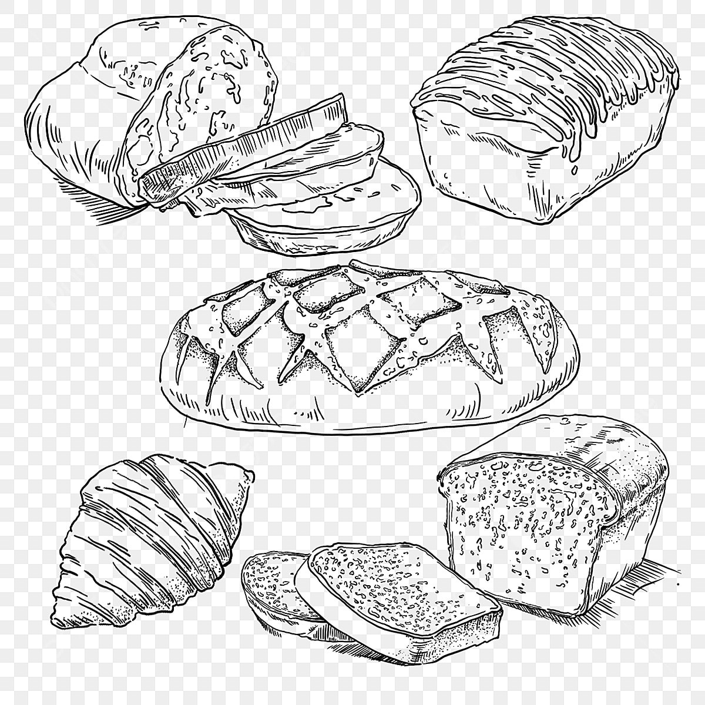
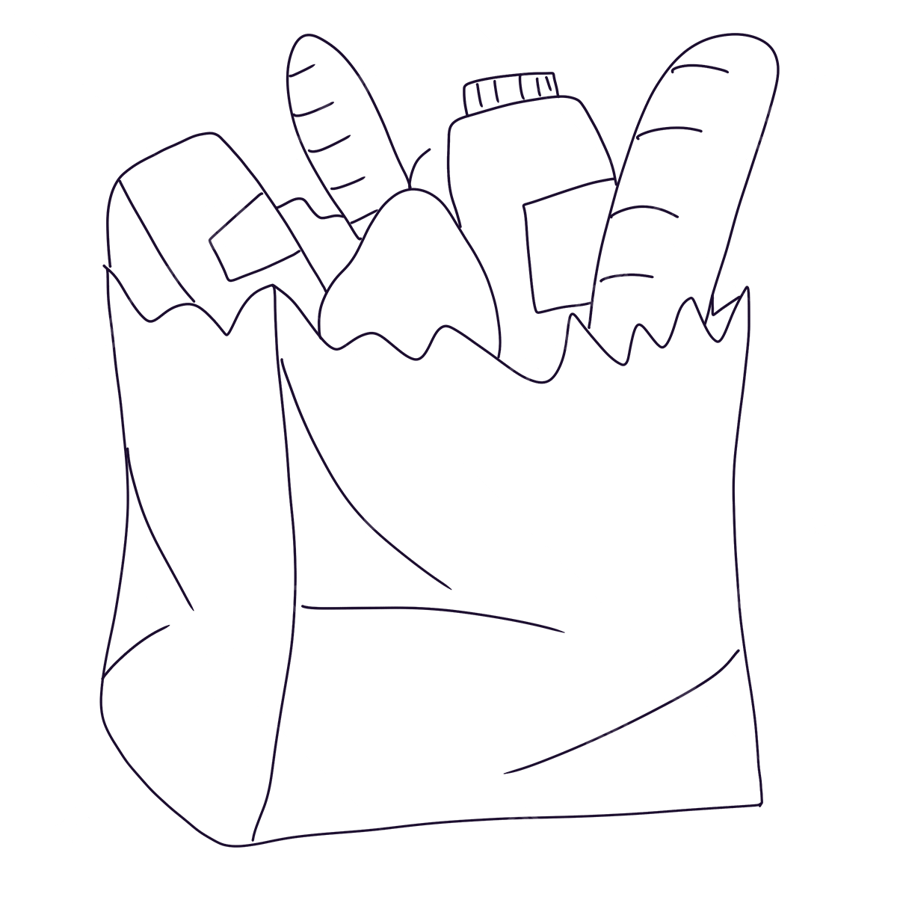

¿Qué es el Mercado Itinerante?
El Mercado Itinerante es un programa del Banco Arquidiocesano de Alimentos que lleva productos esenciales a parroquias y comunidades, con mayor facilidad de acceso que el mercado comercial. Esta estrategia busca facilitar el acceso económico a alimentos y artículos de primera necesidad, mientras apoya el sostenimiento de la operación del banco.
¿Cómo funciona?
- El banco organiza y moviliza productos desde cinco bodegas especializadas:
FruverPanaderíaAbarrotes
 Art. de Aseo
Art. de Aseo Láct. y Cárnicos
Láct. y Cárnicos - Estos productos son transportados a las parroquias donde se monta el mercado por un día.
- Las personas pueden adquirir los productos a precios más bajos que los comerciales, asegurando ahorro sin sacrificar calidad.
- Los ingresos obtenidos son reinvertidos en los programas sociales del banco.
Impacto social
- Fomenta la autogestión comunitaria
- Promueve el consumo justo y consciente
- Ayuda a mantener el banco en operación.
¿Dónde se realiza?
En parroquias previamente articuladas dentro del municipio de Barranquilla y el área metropolitana. La ubicación rota según las necesidades detectadas.
.jpg)
.jpg)